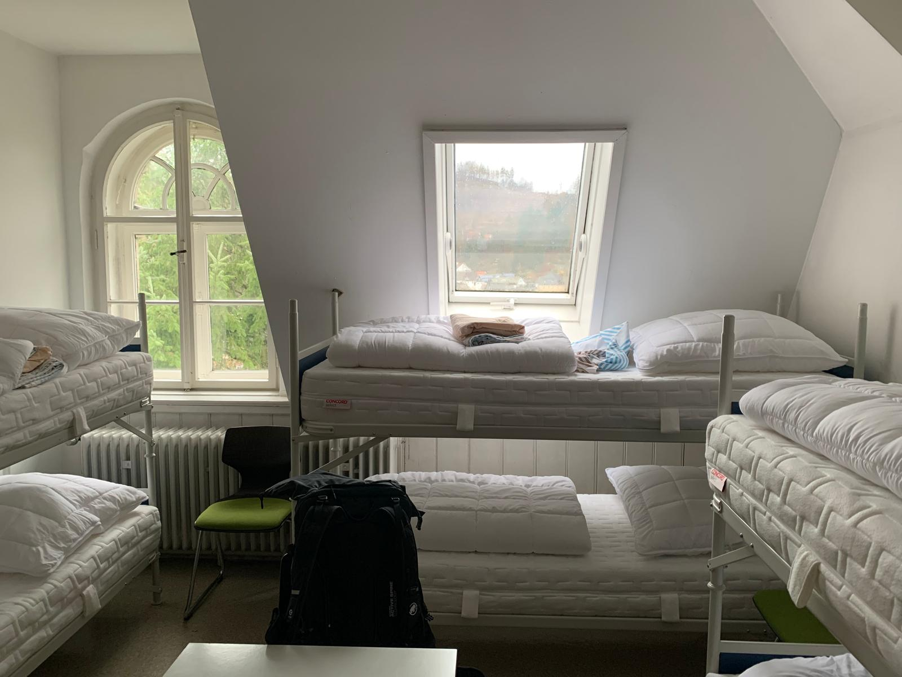

Logistics🏕️🗺️
Venue🏡 and Accommodation🛌
The school will take place at Seminar House of the University of Bayreuth in Wallenfels, Germany. Wallenfels is a small village in the middle of the Franconian Forest, a region in the north of Bavaria, Germany. The village is located in a valley surrounded by hills and forests.
We are providing accommodation for free as part of the Science School.



The participants will be accommodated in shared rooms at the Seminar House of the University of Bayreuth. The rooms are equipped with bunk beds, a desk, and a wardrobe. The bathrooms are shared. The participants are expected to bring their own towels and toiletries.
Food🍱
The organisers will provide main meals (breakfast, lunch and dinner) for free as part of the Science School.
If you have any dietary preferences and/or restrictions (vegetarian/vegan/…), please let us know in advance.
Travel🚗
The participants are expected to organize their travel. The nearest train station to Wallenfels is in Kronach, which is 20 km away, and the nearest airport is in Nuremberg. The is a possibility to park a car at the Seminar House. If you want to drive a car and want to share the ride with other participants, please let us know in advance.
Arrival and Departure 🚆🚍:
Your arrival date is Monday, 23rd September 2024. Ideally, plan to arrive in Bayreuth by train or Flixbus at 12:00 PM. We have arranged a shuttle service that will take you from Bayreuth to Wallenfels at 1:00 PM. Still, you can also come directly to Wallenfells (Universität Bayreuth Ökologische Außenstelle, Am Allerswald 1, 96346 Wallenfels).
We will depart from Wallenfels in the afternoon on Saturday, 28th September 2024. We should be able to leave at the latest at 2:00 PM in Wallenfels and thus, be back in Bayreuth around 3:00 PM. A shuttle service will be available again. Please plan your travels and book your tickets accordingly.
Travelling from the Czech Republic 🇨🇿➡️🇩🇪:
If you are traveling from the Czech Republic by public transport, we find out that the only feasible option is by train. To make it cheaper, you need to buy tickets from České Dráhy and Deutsche Bahn separately.
Recommended train connections for arrival 23.09.:
- České Dráhy:
- 08:23 - 11:27 from Prague main train station to Cheb by IC 564 Západní expres
- Deutsche Bahn
- 11:34 - 11:57 from Cheb to Marktredwitz by RE 33
- 12:07 - 12:24 from Marktredwitz to Kirchenlaibach by RE 31
- 12:42 - 12:58from Kirchenlaibach to Bayreuth by ag RB34
Recommended train connections for departure 28.09.:
- Deutsche Bahn
- 15:01 - 15:15 from Bayreuth to Kirchenlaibach by ag RB34
- 15:34 - 15:51 from Kirchenlaibach to Marktredwitz by RE 31
- 16:03 - 16:24from Marktredwitz to Cheb by RE 33
- České Dráhy
- 16:33 - 19:23 from Cheb to Prague main train station by IC 563 Západní expres
Reimbursement of travel costs 💸:
Please keep all invoices for your travel expenses. We can reimburse them at least partially - the exact amount depends on the overall costs. The cost of the train for CZ participants should be around 80 EUR in total (50 EUR + 748 CZK). We expect that we will be able to cover a minimum of 60 EUR of the costs.
What to bring🎒
- Laptop + charger
- Towels
- Toiletries
- Warm clothes
- Hiking shoes/Raincoat (we might go hiking in the forest)
- Snacks
- Water bottle
- Music instrument
- Good mood